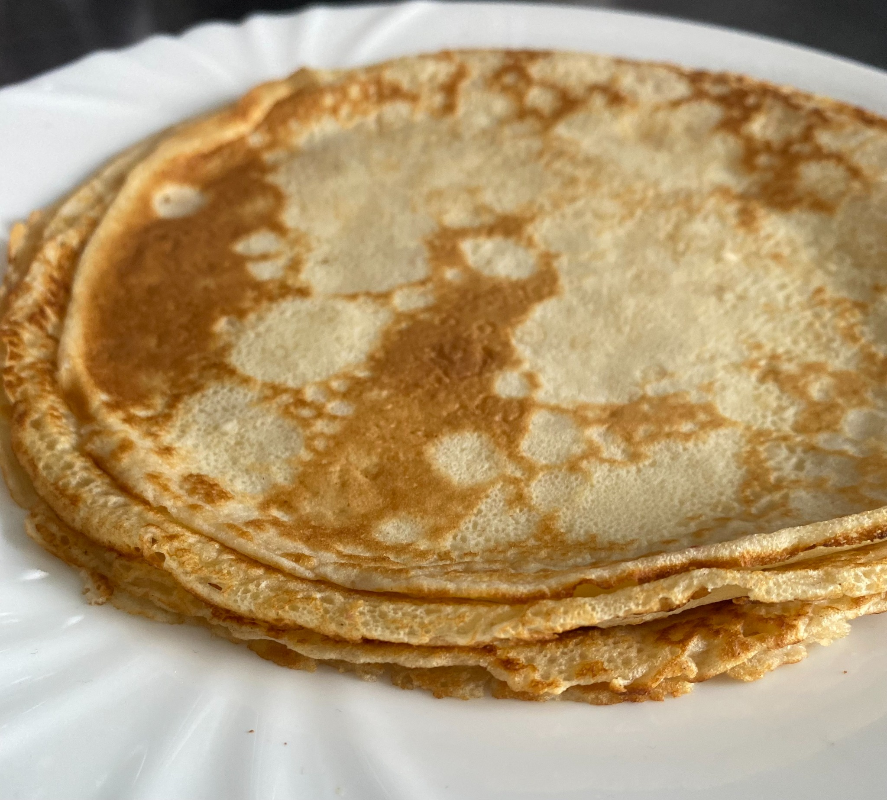
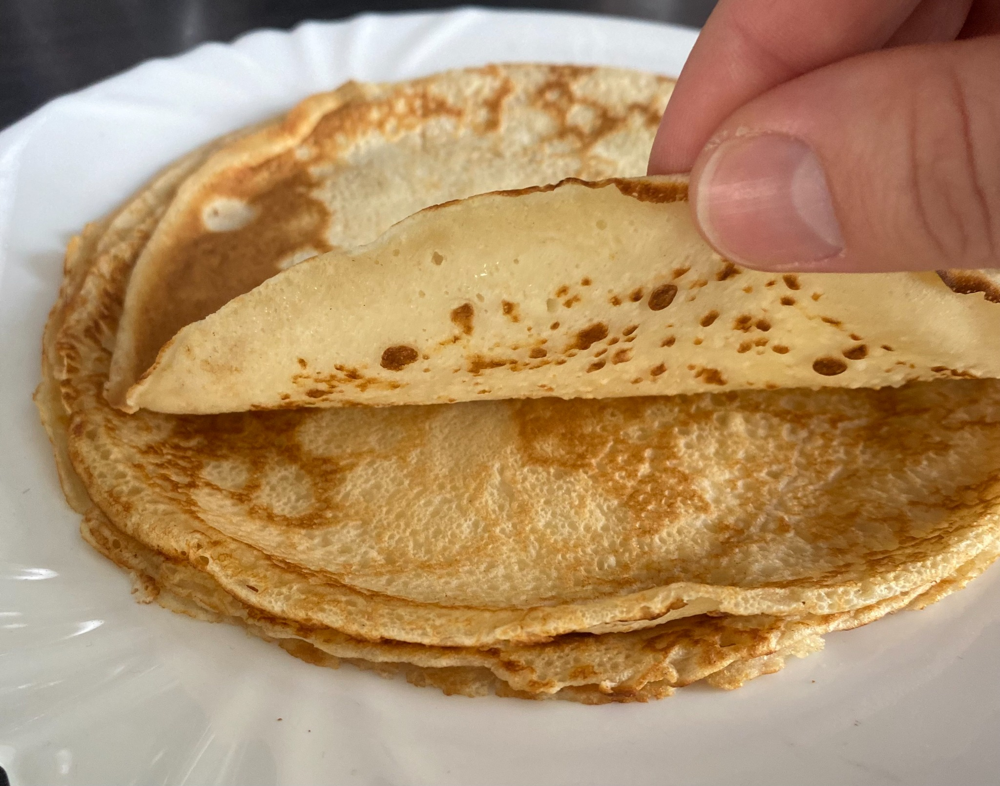

🥞 The Best Pancake Recipe
These pancakes are fluffy, quick, and super easy to make! Here's my favorite recipe – it makes about 25 pancakes:
Ingredients:
- 1000 ml milk
- 4 eggs
- 500 g plain flour (all-purpose flour)
- 1 tablespoon of rum (optional – but I love it!)
- A little butter for the pan (ideally, use a pan with a white surface made for pancakes)
Instructions:
In a large bowl, mix together the milk, eggs, and rum. Gradually add the flour while whisking to create a smooth batter. I use a hand whisk and add the flour one spoonful at a time to avoid lumps.
Now heat up your pan – this is key! A well-heated pan helps ensure your first pancake is perfect. Use a soup ladle to portion the batter – I use about half a ladle per pancake to keep them nice and thin.
Add a bit of butter to the pan, pour in the batter, and tilt the pan to spread it evenly. You'll see the bottom starts to brown – that’s your sign to flip it. You can even try flipping it mid-air for fun 😊 (they don’t stick).
The second side cooks faster – so watch out not to burn it! Then continue: butter, batter, and repeat. Enjoy your pancakes! 😋
 